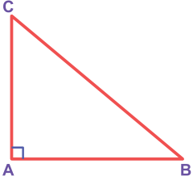
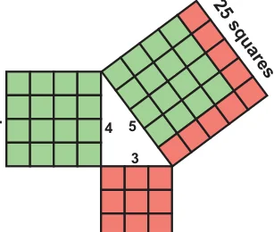

The Pythagorean theorem or simply Pythagoras theorem, named after the ancient Greek Mathematician Pythagoras BC 570-495 (BCE) is one of the most famous and celebrated theorems in Mathematics. People have proved this theorem in numerous ways possibly the most for any mathematical theorem. The proofs are very diverse which include both geometric and algebraic methods dating back to thousands of years.

Statement of the theorem
In a right angled triangle, the square of the hypotenuse is equal to the sum of the squares on the other two sides.
In right angled triangle ABC, \(BC = AB + AC\)
Visual Illustraton:
Fig. 5.22
The given figure contains a triangle of sides of measures 3 units, 4 units and 5 units. From this well known \(3 - 4 - 5\) triangle, one can easily visualise and understand the meaning of the Pythagorean theorem.

In the figure, the sides of measure 3 units and 4 units are called the legs or sides of the right angled triangle. The side of measure 5 units is called the hypotenuse. Recall that the 9 squares hypotenuse is the greatest side in a right angled triangle Fig. 5.23 Now, it is easily seen that a square formed with side 5 units (hypotenuse) has \(5 \times 5 = 25\) unit squares (small squares) and the squares formed with side 3 units and 4 units have \(3 \times 3 = 9\) unit squares and \(4 \times 4 = 16\) unit squares respectively. As per the statement of the theorem, the number of unit squares on the hypotenuse is exactly the sum of the unit squares on the other two legs (sides) of the right angled triangle. Isn't this amazing?
Yes, we find that
\(5 \times 5 = 3 \times 3+4 \times 4\) i.e. \(25 = 9+16\) (True)